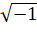

弗·恩格斯
反杜林论1
（欧根·杜林先生在科学中实行的变革）
三个版本的序言
一
这部著作决不是什么“内心冲动”的结果。恰恰相反。
三年前，当杜林先生突然以社会主义的行家兼改革家身份向当代挑战2的时候，我在德国的友人再三同我请求，要我在当时的社会民主党中央机关报《人民国家报》上肘这一新的社会主义理论进行评析。他们认为，为了不在如此年轻的、不久前才最终统一起来的党内造成派别分裂和混乱局面的新的可能，这样做是完全必要的。他们比我能更好地判断德国的情况，所以我理应相信他们。此外，还可以看到，这个新改宗者受到了一部分社会主义出版物的热忱欢迎，诚然，这种热忱只是对杜林先生的善良愿望所作的表示，但同时也使人看出这一部分党的出版物的善良愿望：它们正是估计到杜林的善良愿望。才不加考虑地接受了杜林的学说。还有些人已经打算以通俗的形式在工人中散布这种学说。最后，杜林先生及其小宗派采用各种大吹大擂和阴谋的手法，迫使《人民国家报》对这种如此野心勃勃的新学说明确表态。
虽然如此，我还是过了一年才下决心放下其他工作，着手来啃这一个酸果。这是一只一上口就不得不把它啃完的果子；它不仅很酸，而且很大。这种新的社会主义理论是以某种新哲学体系的最终实际成果的形式出现的。因此，必须联系这个体系来研究这一理论，同时研究这一体系本身；必须跟着杜林先生进入一个广阔的领域，在这个领域中，他谈到了所有可能涉及的东西，而且还不止这些东西。这样就产生了一系列的论文，它们从1877年初开始陆续发表在《人民国家报》的续刊——莱比锡的《前进报》上，现汇集成书，献给读者。
由此可见，对象本身的性质迫使批判不得不详尽，这样的详尽是同这一对象的学术内容即同杜林著作的学术内容极不相称的。但是，批判之所以这样详尽，还可以归因于另外两种情况。一方面，这样做使我在这本书所涉及到的很不相同的领域中，有可能正面阐发我对这些在现时具有较为普遍的科学意义或实践意义的争论问题的见解。这在每一章里都可以看到，尽管这本书的目的并不是以另一个体系去同杜林先生的“体系”相对立，可是希望读者不要忽略我所提出的各种见解之间的内在联系。我现在已有充分的证据，表明我在这方面的工作不是完全没有成效的。
另一方面，“创造体系的”杜林先生在当代德国并不是个别的现象。近来，天体演化学、一般自然哲学、政治学、经济学等等的体系如雨后春笋出现在德国。最不起眼的哲学博士，甚至大学生，动辄就要创造一个完整的“体系”。正如在现代国家里假定每一个公民对于他所要表决的一切问题都具有判断能力一样，正如在经济学中假定每一个消费者对于他要买来供日用的所有商品都是真正的内行一样，现今在科学上据说也要作这样的假定。所谓科学自由(1)，就是人们可以著书立说来谈论自己从未学过的各种东西，而且标榜这是唯一的严格科学的方法。杜林先生正是这种放肆的伪科学的最典型的代表之一，这种伪科学现在在德国到处流行，并把一切淹没在它的高超的胡说的喧嚷声中。诗歌、哲学、政治学、经济学、历史编纂学中有这种高超的胡说；讲台和论坛上有这种高超的胡说；到处都有这种高超的胡说；这种高超的胡说妄想出人头地并成为深刻思想，以别于其他民族的粗浅平庸的胡说；这种高超的胡说是德国智力工业最具特色和最大量的产品，它们价廉质劣，完全和德国其他的制品一样，只可惜它们没有和这些制品一起在费城陈列出来3。甚至德国的社会主义，特别是自从有了杜林先生的范例以后，近来也十分热衷于高超的胡说，造就出以“科学”自炫但对这种科学又“确实什么也没有学到”4的各色人物。这是一种幼稚病，它表明德国大学生开始向社会民主主义转变，而这种幼稚病是和这一转变分不开的，可是我们的工人因有非常健康的本性，一定会克服这种幼稚病。
如果在那些我最多只能以涉猎者的资格发表看法的领域里我不得不跟着杜林先生走，那么这不是我的过错。在这种情况下，我大多只是限于举出确切的、无可争辩的事实去反驳我的论敌的错误的或歪曲的论断。在法学上以及在自然科学的某些问题上，我就是这样做的。在其他情况下，涉及的是理论自然科学的一般观点，就是说，是这样一个领域，在那里，专业自然科学家也不得不越出他的专业的范围，而涉及到邻近的领域——在那里，他像微耳和先生所承认的，也和我们任何人一样只是一个“半通”5。在这里，人们对于表达上的些许不确切之处和笨拙之处会相互谅解，我希望也能够得到这样的谅解。
当我写完这篇序言的时候，我见到了一则由杜林先生草拟的书商的广告：杜林先生的一本新的“权威”著作《合理的物理和化学的新的基本定律》已经出版。我深知自己在物理和化学方面的知识不够，可是我总相信，对于我的杜林先生我是很知底的。所以，甚至没有看到上述著作，就可以预言，杜林先生在这本书中提出的物理和化学的定律，在其谬误或陈腐的程度上，尽可以同他以前发现的并在我的这本书中考察过的经济学、世界模式论等等的规律相媲美；而杜林先生所设计的低温计或低温测量仪，既不是用来测量高温，也不是用来测量低温，而唯一地只是用来测量杜林先生的狂妄无知。
1878年6月11日于伦敦
二
本书要出新版，是出乎我意料的。本书所批判的对象现在几乎已被遗忘了；这部著作不仅在1877年至1878年间分篇登载于莱比锡的《前进报》上，以飨成千上万的读者，而且还汇编成单行本大量发行。我在几年前对杜林先生的评论，现在怎么还能使人发生兴趣呢？
这首先是下述情况造成的：在反社会党人法6颁布之后，这部著作和几乎所有当时正在流行的我的其他著作一样，立即在德意志帝国遭到查禁。谁只要不是死抱住神圣同盟7各国的传统的官僚偏见不放，谁就一定会明白这种措施带来的效果：被禁的书籍两倍、三倍地畅销。这暴露了柏林的大人先生们的无能，他们颁布了禁令，却不能执行。事实上，由于帝国政府的帮忙，我的若干短篇著作发行了比我自身努力所能达到的更多的新版；我没有时间对正文作适当的修订，而大部分只好干脆任其照旧版翻印。
不过还有另一种情况。本书所批判的杜林先生的“体系”涉及非常广泛的理论领域，这使我不能不跟着他到处跑，并以自己的见解去反驳他的见解。因此消极的批判成了积极的批判；论战转变成对马克思和我所主张的辩证方法和共产主义世界观的比较连贯的阐述，而这一阐述包括了相当多的领域。我们的这一世界观，首先在马克思的《哲学的贫困》和《共产主义宣言》(2)中问世，经过足足20年的潜伏阶段，到《资本论》出版以后，就越来越迅速地为日益广泛的各界人士所接受。现在，它已远远越出欧洲的范围，在一切有无产者和无畏的科学理论家的国家里，都受到了重视和拥护。因此，看来有这样的读者，他们对于这一问题的兴趣极大，他们由于对论战中所作的正面阐述感兴趣，因而愿意了解现在在许多方面已经失去对象的同杜林观点的论战。
顺便指出：本书所阐述的世界观，绝大部分是由马克思确立和阐发的，而只有极小的部分是属于我的，所以，我的这种阐述不可能在他不了解的情况下进行，这在我们相互之间是不言而喻的。在付印之前，我曾把全部原稿念给他听，而且经济学那一编的第十章（《〈批判史〉论述》）就是马克思写的，只是由于外部的原因，我才不得不很遗憾地把它稍加缩短。在各种专业上互相帮助，这早就成了我们的习惯。
现在的新版，除了一章，其余都按第一版翻印，未作修改。一方面，我没有时间作彻底的修订，尽管我很想修改某些叙述。我担负着编印马克思遗稿的责任，这比其他一切事情都远为重要。此外，我的良心也不允许我作任何修改。本书是一部论战性的著作，我觉得，既然我的对手不能作什么修改，那我这方也理应不作什么修改。我只能要求有反驳杜林先生的答辩的权利。可是杜林先生针对我的论战所写的东西，我没有看过，而且如无特殊的必要，我也不想去看；我在理论上对他的清算已告结束。况且，杜林先生后来遭到柏林大学的卑劣的、不公正的对待，我对他更应当遵守文字论战的道义准则。当然，这所大学为了这件事受到了谴责。一所大学既然可以在人所共知的情况下剥夺杜林先生的教学自由，那么如果有人要在同样的人所共知的情况下把施韦宁格先生硬塞给它，它也就不应当感到惊讶了。8
只有一章，我允许自己作些解释性的增补，这就是第三编第二章《理论》。这里所涉及的仅仅是我所主张的观点的一个核心问题的表述。如果我力求写得通俗些，增补得连贯些，我的论敌是不会抱怨的。而且，这里还有外部的原因。我为我的朋友拉法格把本书的三章（《引论》的第一章及第三编的第一、二两章）编成独立的小册子，以便译成法文出版；在法文版成为意大利文版和波兰文版所依据的文本之后，以《社会主义从空想到科学的发展》为名的德文版也刊行了。这本小册子在短短的几个月内就发行了三版，接着俄文的、丹麦文的译本也出现了。在所有这些舨本中，只对上述的一章作了增补。不过，如果我在刊行原本的新版时，拘守原文，而不顾它后来的已经成为国际性的版本，那么这就是一种迂腐行为了。
此外，我还想作修改的，主要有两点。第一，关于人类原始史，直到1877年，摩尔根才给我们提供了理解这一历史的钥匙。(3)而在这之后，由于我有机会在自己的《家庭、私有制和国家的起源》（1884年苏黎世版）一书中对这期间我所能获得的材料作了加工，所以这里只要指出这部较晚的著作就够了。
第二，关于理论自然科学的那部分，这里叙述得极其笨拙，有些地方现在本来可以表达得更清楚些，更明确些。既然我认为自己没有权利对这部分进行修订，所以我理应在这里作自我批评。
马克思和我，可以说是唯一把自觉的辩证法从德国唯心主义哲学中拯救出来并运用于唯物主义的自然观和历史观的人。可是要确立辩证的同时又是唯物主义的自然观，需要具备数学和自然科学的知识。马克思是精通数学的，可是对于自然科学，我们只能作零星的、时停时续的、片断的研究。因此，当我退出商界并移居伦敦9，从而有时间进行研究的时候。我尽可能地使自己在数学和自然科学方面来一次彻底的——像李比希所说的——“脱毛”10，八年当中，我把大部分时间用在这上面。当我不得不去探讨杜林先生的所谓自然哲学时，我正处在这一脱毛过程的中间。所以，如果我有时在这方面找不到确切的术语，如果我在理论自然科学的领域中总的说来表现得相当笨拙，那么这是十分自然的。可是另一方面，我意识到当时自己还做不到确有把握，这使我谨慎起来；没有人能指出我真正违反了当时人所共知的事实，或者不正确地叙述了当时公认的理论。在这方面，只有一位未被承认的大数学家写信给马克思，抱怨我诋毁了 的声誉11。
不言而喻，我对数学和自然科学作这种概括性的叙述，是要在细节上也使自己确信那种对我来说在总的方面已没有任何怀疑的东西，这就是：在自然界里，正是那些在历史上支配着似乎是偶然事变的辩证运动规律，也在无数错综复杂的变化中发生作用；这些规律也同样地贯串于人类思维的发展史中，它们逐渐被思维着的人所意识到。这些规律最初是由黑格尔全面地、不过是以神秘的形式阐发的，而剥去它们的神秘形式，并使人们清楚地意识到它们的全部的单纯性和普遍有效性，这是我们的期求之一。显然，旧的自然哲学，无论它包含多少真正好的东西和多少可以结果实的萌芽(4)，是不能满足我们的需要的。正如本书比较详细地阐明的那样，旧的自然哲学，特别是在黑格尔的形式中，具有这样的缺陷：它不承认自然界有时间上的发展，不承认“先后”，只承认“并列”。这种观点，一方面是由黑格尔体系本身造成的，这个体系认为只是“精神”才有历史的不断发展，另一方面，也是由当时自然科学的总的状况造成的。所以在这方面，黑格尔远远落后于康德，康德的星云说已经宣布了太阳系的起源，而他关于潮汐延缓地球自转的发现也已经宣布了太阳系的毁灭。14最后。对我来说，事情不在于把辩证法规律硬塞进自然界，而在于从自然界中找出这些规律并从自然界出发加以阐发。
不过，要从相互联系上，而且在每个单独的领域中这样做，却是一项艰巨的工作。不仅所要掌握的这个领域几乎是无穷无尽的，而且就是在这整个的领域内，自然科学本身也正处在急剧的变革过程中，以致那些即使把全部空闲时间用来干这件事的人，也很难跟踪不失。可是自从卡尔·马克思去世之后，更紧迫的义务占去了我全部的时间，所以我不得不中断我的工作。目前我只好满足于本书所作的概述，等将来有机会再把所获得的成果汇集发表，或许同马克思所遗留下来的极其重要的数学手稿一齐发表。15
可是，理论自然科学的进步也许会使我的劳动绝大部分或者全部成为多余的。因为单是把大量积累的、纯经验的发现加以系统化的必要性，就会迫使理论自然科学发生革命，这场革命必然使最顽固的经验主义者也日益意识到自然过程的辩证性质。旧的固定不变的对立，严格的不可逾越的分界线正在日益消失。自从最后的“真正”气体也被液化以来，自从证实了物体可以被置于一种难以分辨是液态还是气态的状态以来，聚集状态就丧失了它以前的绝对性质的最后残余。16根据气体动力学的原理，在纯气体中，单个气体分子的运动速度的乘方，在同温时和分子量成反比，这样，热也直接进入本身直接可以计量的运动形式的系列。十年前，新发现的、伟大的运动基本规律还仅仅被概括为能量守恒定律，仅仅被概括为运动既不能消灭也不能创造这种表述，就是说，仅仅从量的方面加以概括，而现在，这种狭隘的、消极的表述则日益被那种关于能的转化的积极的表述所代替，在这里过程的质的内容第一次获得了它应有的地位，对世界之外的造物主的最后记忆也消除了。当运动（所谓能）从动能（所谓机械力）转化为电、热、位能等等，以及发生相反转化时，运动的量是不变的，这一点现在已无须再当做什么新的东西来宣扬了。这种认识，是今后对转化过程本身进行更为丰富多彩的研究的既得的基础，而转化过程是一个伟大的基本过程，对自然的全部认识都综合于对这个过程的认识。自从用进化论观点从事生物学研究以来，有机界领域内固定不变的分类界线一一消失了；几乎无法分类的中间环节日益增多，更精确的研究把有机体从这一纲归到另一纲，过去几乎成为信条的那些区别标志，丧失了它们的绝对效力；我们现在知道有卵生的哺乳动物，而且，如果消息确实的话，还有用四肢行走的鸟17。早在许多年以前，由于细胞的发现，微耳和不得不把动物个体的统一体分解成细胞国家的联邦——这种看法与其说是自然科学的和辩证法的，不如说是进步党的18——，而现在，循环于高等动物体内的阿米巴状的白血球的发现，则使关于动物的（因而也是人的）个体性的概念变得复杂多了。可是，正是那些过去被认为是不可调和的和不能化解的两极对立，正是那些强制规定的分界线和纲的区别，使现代的理论自然科学带上狭隘的形而上学的性质。这些对立和区别，虽然存在于自然界中，可是只具有相对意义，相反，它们那些想象的固定性和绝对意义，只不过是由我们的反思带进自然界的——这种认识构成辩证自然观的核心。积累起来的自然科学的事实迫使人们达到上述认识；如果人们领会了辩证思维规律，进而去领会这些事实的辩证性质，就可以比较容易地达到这种认识。无论如何，自然科学现在已经发展得再也不能回避辩证综合了。”于是，如果自然科学不忘记，作为它的经验的总结的结论都是一些概念，而运用这些概念的艺术不是天生的。也不是和普通的日常意识一起得来的，而是要求有真实的思维，这样的思维也有同经验自然研究一样长的经验历史——如果自然科学不忘记这些，那么，它就会使自己比较容易地经历这个过程。正是由于自然科学正在学会掌握2500年来哲学发展的成果，它才一方面可以摆脱任何单独的、处在它之外和凌驾于它之上的自然哲学，另一方面也可以摆脱它本身的、从英国经验主义沿袭下来的、狭隘的思维方法。
1885年9月23日于伦敦
三
这一新版，除了几处无足轻重的文字上的修改，都是照前一版翻印的。只有一章，即第二编第十章《〈批判史〉论述》，我作了重要的增补，理由如下。
正如第二版序言已经提到的，这一章所有重要的部分都是马克思写的。在原定作为报刊文章的初稿上，我不得不把马克思的手稿大加删节，而恰恰在删掉的部分里，他对经济学史的独立的阐述比起对杜林主张的批判要重要得多。这些阐述恰恰又是手稿当中甚至直到现在还具有重大意义和长远意义的部分。我认为，自己有责任把18马克思说明配第、诺思、洛克、休谟等人在古典经济学产生过程中所应占的地位的那些部分，尽可能完全地并逐字逐句地发表出来；而他对魁奈的《经济表》19所作的解释就更是如此了，这个表对整个现代经济学来说，仍然是不可解的斯芬克斯之谜。相反，凡是专门涉及杜林先生著作的地方，只要不影响上下文的联系，我都把它删掉了。
最后，我感到十分满意的是，自从第二版以来，本书所主张的观点已经深入科学界和工人阶级的公众意识，而且是在世界上一切文明国家里。
弗·恩格斯
1894年5月23日于伦敦
弗·恩格斯写于1876年9月—1878年6月
原文是德文
载于1877年1月3日—1878年7月7日《前进报》
中文根据《马克思恩格斯全集》1988年历史考证版第1部分第27卷并参考《马克思恩格斯全集》德文版第20卷翻译
|
脚 注
(1) 恩格斯在这里借用了鲁·微耳和的《现代国家中的科学自由》这一书名中的说法。——编者注
(2) 即《共产党宣言》。——编者注
(3) 参看路·亨·摩尔根《古代社会，或人类从蒙昧时代经过野蛮时代到文明时代的发展过程的研究》1877年伦敦版。——编者注
(4) 同卡尔·福格特之流的愚蠢的庸人一起去攻击旧的自然哲学，比评价它的历史意义要容易得多。旧的自然哲学包含许多谬见和空想，可是并不比当时经验自然科学家的非哲学理论包含得多，至于它还包含许多有见识的和合理的东西，那么自从进化论传播之后这已开始为人们所了解。例如，海克尔完全有理由承认特雷维腊努斯和奥肯的功绩12。奥肯在他的原浆说和原胞说中，作为生物学的公设提出的那种东西，后来真的被发现是原生质和细胞。如果特别谈到黑格尔，那么，他在许多方面远远超出他同时代的经验科学家，这些人硬把某一种力——重力、浮力、电接触力等等加在所有不能解释的现象上，以为这样就把这些现象都解释了，如果这行不通，就搬出某种未知的要素如光素、热索、电素等等。这些臆想出来的要素，现在可以说基本上已经被排除了，可是，黑袼尔所反对的那种玩弄力的把戏还在可笑地耍弄着，例如1869年亥姆霍兹在因斯布鲁克的演说中（亥姆霍兹《通俗讲演集》1871年版第2册第190页，13。同18世纪法国人传下来的把牛顿神化（英国使他满载荣誉与财富）这种做法相反·黑格尔指出：开普勒（德国让他饿死）是现代天体力学的真正奠基者；牛顿的万有引力定律已经包含在开普勒的所有三个定律中，在第三定律中甚至明确地表达出来了。黑格尔在其《自然哲学》第270节和附释中（《黑格尔全集》1842年版第7卷第98、113 —115页），以几个简单的公式所证明的东西，作为现代数学力学的成果重新出现在古斯塔夫·基尔霍夫的书里（基尔霍夫《数学物理学讲义》1877年莱比锡第2版第10页），而且采用了和黑格尔首先阐发的那个简单的数学模型实质上相同的模型。自然哲学家与自觉的辩证的自然科学的关系，就像空想主义者与现代共产主义的关系一样。
注 释
1 《反杜林论》是恩格斯阐述马克思主义基本理论的重要著作。在这部著作中。恩格斯通过对欧根·杜林在哲学、经济学和社会主义领域宣扬的错误观点的批判，对马克思主义的三个组成部分——哲学、政治经济学和科学社会主义作了全面系统的阐述、揭示了这之个组成部分之间的内在联系，指出唯物辩证法和唯物史观作为科学的世界观和方法论，贯穿于马克思主义政治经济学和科学社会主义，唯物史观和剩余价值理论的创立使社会主义由空想变为科学。这部著作最初以《欧根·杜林先生在科学中实行的变革、为名发表，后以《反杜林论》著称。
《反杜林论》是德国社会民主党内思想斗争的直接产物。19世纪70年代，柏林大学讲师欧根·杜林以社会主义的行家和改革家自居，宣扬庸俗社会主义、先验主义、实证主义、庸俗经济学和小资产阶级社会主义，妄图拼凑一个包罗万象的理论体系。杜林的思想一时在德国社会民主党人中间产生很大影响，爱·伯恩施坦、约·莫斯特等都成了杜林的积极追随者，甚至奥·倍倍尔也一度受杜林的影响。杜林的著作《国民经济学和社会主义批判史》第二版（1875年出版）和《哲学教程》（最后一册在1875年2月出版）的出版尤其助长了这种势头。在这两本书中，自命为社会主义信徒的杜林，对马克思主义进行了猛烈攻击，这就促使威·李卜克内西在1875年2月1日和4月21日致信恩格斯，请他在《人民国家报》上反击杜林。1875年10月和1876年5月，李卜克内西把该报拒绝发表的阿·恩斯和约·莫斯特吹捧杜林的文章寄给了恩格斯。
早在1868年初，马克思和恩格斯因杜林在1867年12月《现代知识补充材料》杂志第3卷第3期上发表了对《资本论》第一卷的评论而开始关注他的观点。从马克思和恩格斯1868年1—3月的书信中，可以看出他们对杜林观点的批判态度。1876年2月，恩格斯在《人民国家报》上发表的《德意志帝国国会中的普鲁士烧酒》一文中指名批判了杜林的言论（见《马克思恩格斯全集》中文第2版第25卷第54页）。鉴于杜林的思想对1875年5月成立的德国社会主义工人党造成的危害，恩格斯决定中断《自然辩证法》的写作，全力反击杜林，捍卫马克思主义这一无产阶级政党的科学世界观。
恩格斯在1876年5月24日给马克思的信中表示打算批判杜林的著作，马克思于5月25日回信表示坚决支持。于是恩格斯立即着手这项工作。他在5月28日给马克思的信中阐述了他的著作的总计划和性质。
恩格斯写作《反杜林论》用了两年时间。从1876年5月底开始做准备工作，到1878年6月完成。
《反杜林论》第一编正式写于1876年9月—1877年1月。这一编以《欧根·杜林先生在哲学中实行的变革》为题，以一组论文的形式陆续发表于1877年1—5月的《前进报》。这一编还包括后来第一次出版该书单行本时抽出来作为整个三编的引论的第一章和第二章。
该书的第二编写于1877年6月—12月。这一编以《欧根·杜林先生在政治经济学中实行的变革》为题发表于1877年7—12月的《前进报》学术附刊和附刊。其中第十章《〈批判史〉论述》是马克思写的，恩格斯作了删节和修改。马克思的原稿《评杜林〈国民经济学批剡史〉》见本卷第387—430页。
该书的第三编写于1878年上半年。这一编以《欧根·杜林先生在社会主义中实行的变革》为题发表于1878年5—7月的《前进报》附刊。
《反杜林论》的发表引起了杜林追随者的不满。1877年5月27—29日在哥达举行的党代表大会上，他们力图阻止在党的中央机关报《前进报》上发表恩格斯的这部著作。由于他们的影响和干扰，该报发表《反杜林论》时断时续。
1877年7月，这部著作的第一编以《欧根·杜林先生在科学中实行的变革。一、哲学》为题在莱比锡出版了单行本。1878年7月，第二编和第三编以《欧根·杜林先生在科学中实行的变革。二，政治经济学·社会主义》为题也在莱比锡出版了单行本。1878年7月，在莱比锡还出版了《反杜林论》第一版，标题为《欧根·杜林先生在科学中实行的变革。哲学·政治经济学·社会主义》。1885年12月，该书第二版在苏黎世出版（扉页上标注的时间为1886年）。1894年7月，经过修订的第三版在斯图加特出版。第二版和第三版均以《欧根·杜林先生在科学中实行的变革》为标题。恩格斯为这三个版本写了序言。
这部著作的书名讽刺性地套用了1865年在慕尼黑出版的杜林的著作《凯里在国民经济学和社会科学中实行的变革》的书名。杜林在该书中吹捧美国庸俗经济学家查·凯里，把凯里奉为他在政治经济学方面的导师。恩格斯在1879年11月14日给奥·倍倍尔的信中把《欧根·杜林先生在科学中实行的变革》称做《反杜林论》。后来这部著作以《反杜林论》这一书名广为流传，载入史册。
1880年，恩格斯应保·拉法格请求，把《反杜林论》的三章（《引论》的第一章以及第三编的第一章和第二章）改编成一本独立的通俗著作，由拉法格译成法文并经恩格斯本人审定，书名为《空想社会主义和科学社会主义》，1883年出版德文单行本时书名改为《社会主义从空想到科学的发展》。马克思称它为“科学社会主义的入门”（见《马克思恩格斯全集》中文第2版第25卷第441页）。
列宁认为，《反杜林论》“分析了哲学、自然科学和社会科学中最重大的问题”（见《列宁全集》中文第2版第2卷第9页），它同《共产党宣言》一样，是“每个觉悟工人必读的书籍”（同上，第23卷第42页）。
《反杜林论》第一个中译本由吴黎平翻译，1930年上海江南书店出版：同年上海昆仑书店还出版了钱铁如翻译的《反杜林论》上册。吴黎平的译本后经译者修订多次再版。
本卷所收的《反杜林论》根据《马克思恩格斯全集》历史考证版第1部分第27卷（1988年）并参考《马克思恩格斯全集》德文版第20卷翻译。——3。
2 恩格斯的这一说法出自席勒的剧本《唐·卡洛斯》第1幕第9场的一段话：
“我再也无所畏惧了，因为和你手挽着手
我就可以向当代挑战。”——7。
3 1876年5月10日第六届世界工业博览会在费城开幕，有40个国家参展。为了在国际市场上获得一席之地，德国也参加了展览。可是，德国政府任命的德国展品评判委员会主席、柏林工业学院院长弗·勒洛教授不得不承认，德国产品的性能大大落后于其他国家，德国工业遵循的原则是”价廉质劣”。此事由1876年6月27日柏林《国民报》第293号首先披露，致使舆论哗然。《人民国家报》在7—9月就此事专门发表了一系列文章。——9。
4 “确实什么也没有学到”这句流传很广的话，有人认为出自法国海军上将德·帕纳1796年的一封信，另有人认为此话出自法国外交大臣沙·达来朗之口，是针对保皇党人讲的，认为他们没有能够从18世纪末法国资产阶级革命中吸取任何教训。——9。
5 “半通”的说法出自鲁·微耳和1877年9月22日在慕尼黑德国自然科学家和医生第五十次代表大会第三次全体会议上所作的报告。见鲁·微耳和《现代国家中的科学自由》1877年柏林版第13页。——9。
6 反社会党人法或非常法，即反社会党人非常法，是俾斯麦政府在德意志帝国国会多数的支持下于1878年10月19日通过并于10月21日生效的一项法律，其目的在于反对社会主义运动和工人运动。这项法律将德国社会民主党置于非法地位，党的一切组织，群众性的工人组织被取缔，社会主义的和工人的刊物被查禁，社会主义文献被没收，社会民主党人遭到镇压。但是，社会民主党在马克思和恩格斯的积极帮助下战胜了自己队伍中右的和“左”的机会主义倾向，得以在非常法生效期间正确地把地下工作同利用合法机会结合起来，大大加强和扩大了自己在群众中的影响。在日益壮大的工人运动的压力下，反社会党人非常法于1890年10月1日被废除。——10。
7 神圣同盟是欧洲各专制君主镇压欧洲各国进步运动和维护封建君主制度的反动联盟。该同盟是在拿破仑第一战败以后，由俄国沙皇亚历山大一世倡议，俄国，奥地利和普昏土于1815年9月26日在巴黎建立的。后来几乎所有欧洲君主国家都参加了同盟。这些国家的君主负有相互提供经济、军事和其他方面援助的义务，以维持维也纳会议上重新划定的边界和镇压各国革命。神圣同盟为了镇压欧洲各国资产阶级革命和民族解放运动，先后召开过几次会议。由于欧洲诸国间的矛盾以及民族革命运动的发展，1830年法国七月革命后神圣同盟实际上已经瓦解。——10。
8 杜林从1872年开始就在自己的著作中猛烈抨击大学的教授们。例如，在《力学一般原则批判史》第一版（1872年）中，他就指责海·亥姆霍兹故意对罗·迈尔的著作保持缄默。杜林还尖锐地批评了大学的各种制度，因此遭到了反动教授们的迫害。1876年，根据大学教授们的倡议，他被剥夺了在私立女子中学任教的资格。在《力学一般原则批判史》第二版（1877年）和论妇女教育的小册子（1877年）中，杜林再次提出了自己的指责，言辞更加激烈。1877年7月，根据哲学系的要求，他被剥夺了在大学执教的权利。而奥·俾斯麦的私人医生恩·施韦宁格于1884年被任命为柏林大学教授。——12。
9 恩格斯1869年7月1日停止了在曼彻斯特的欧门——恩格斯公司的工作、于1870年9月29日迁居伦敦。——13。
10 尤·李比希在谈到自己的科学观点的发展时指出：“化学正在取得异常迅速的进展，而希望赶上它的化学家们则处于不断脱毛的状态。不适于飞翔的旧羽毛从翅膀上脱落下来，而代之以新生的羽毛，这样飞起来就更有力更轻快。”见尤·李比希《化学在农业和生理学中的应用》）1862年不伦瑞克第7版第1卷第26页。——13。
11 指德国社会民主党人亨·威·法比安1880年11月6日给马克思的信（参看恩格斯1884年4月11日给卡·考茨基的信和1885年6月3日给弗·阿·左尔格的信）。恩格斯在《反杜林论》第一编第十二章中谈到了

（见本卷第128页）。——13。
12 指恩·海克尔在他的《自然创造史。关于一般进化学说，特别是达尔文、歌德、拉马克的进化学说的通俗学术讲演》1873年柏林修订第4版第83——88页、即第四讲《歌德和奥肯的进化论》结尾部分提出的见解。——14。
13 恩格斯在《自然辩证法》中的《运动的基本形式》（见本卷第589—606页）一文中探讨了黑格尔和海·亥姆霍兹关于力的概念的见解。——14。
14 关于伊·康德的星云假说，见注26。
关于康德的潮汐摩擦理论，见《自然辩证法》中的《潮汐摩擦》（本卷第662—667页）。——15。
15 指恩格斯的《自然辩证法》和马克思的数学手稿。马克思的数学手稿共有1 000多页，写于19世纪50年代末至80年代初。——15。
16 指英国物理学家托·安德鲁斯、法国物理学家路·保·凯叶泰和瑞士物理学家拉·皮克泰的研究成果。安德鲁斯于1869年研究了气体的临界状态，凯时泰于1877年证明氧可以液化，与他同时皮克泰也研究了气体的液化。——15。
17 卵生的哺乳动物指鸭嘴兽，用四肢行走的鸟显然指始祖鸟。——16。
18 关于有机体是“细胞国家”的形形色色的观点，出现在19世纪下半叶。按照这种观点，可以把由细胞组成的有机体比做国家，把各个细胞比做单个人。自由资产阶级的国家观念被搬进了生物学理论。根据鲁·微耳和在《细胞病理学》中阐述的观点，动物个体可以分解为组织，组织分解为细胞层，细胞层分解为单个细胞，所以归根到底，动物个体是单个细胞的机械总和。见鲁·微耳和《细胞病理学》1871年柏林增订第4版第17页。
恩格斯谈到这一观点具有“进步党的”性质，是暗指微耳和是德国资产阶级进步党党员，并且是该党的创始人和著名活动家之一。
关于进步党见注145。——16。
19 《经济表》是重农学派创始人弗·魁奈关于社会总产品的再生产和流通的说明，1758年在凡尔赛以小册子形式首次发表，后来多次修改。马克思在1861——1863年经济学手稿中（见《马克思恩格斯全集》中文第2版第33卷第374—415页）、在为《反杜林论》第二编第十章《〈批判史〉论述》写的初稿中（见本卷第415—427、431—436页），对《经济表》作了详细评述。马克思的评述主要依据魁奈的著作《经济表分析》（载于欧·德尔编《重农学派》1846年巴黎版第1部），并参考了尼·勃多的《经济表说明》。——18。